Aleem — Fireflies
Aleem — “Fireflies”, for Sucher Entertainment. Directed by Chris Cuseo, visual effects by Mr. Pinoux. A rooftop in Downtown Los Angeles.
Aleem — « Fireflies », pour Sucher Entertainment. Réalisé par Chris Cuseo, effets visuels de Mr. Pinoux. Un toit à Downtown Los Angeles.
A rented rooftop in Downtown Los Angeles, with an Airstream parked on the deck, cacti in pots and strings of little lights hanging over everything. One day of shooting. Chris Cuseo led, with a camera operator and a director alongside him; Mr. Pinoux took the visual effects.
Un toit loué à Downtown Los Angeles, avec une caravane Airstream posée sur la terrasse, des cactus en pots et des guirlandes de petites lumières qui pendouillent partout. Une journée de tournage. Chris Cuseo a mené, avec un cadreur et un réalisateur à ses côtés ; Mr. Pinoux a pris les effets visuels.
A RED on the shoulder — a Dragon, most likely. A drone for the last shot, which in 2015 was still rare enough to feel like a treat. And a little hand-held 16mm for the grainy, framed shots in the edit, the ones with the sprocket holes showing.
Une RED à l'épaule — une Dragon, sans doute. Un drone pour le plan de fin, ce qui en 2015 était encore assez rare pour faire plaisir. Et une petite 16 mm à la main pour les plans granuleux du montage, ceux où les perforations dépassent du cadre.
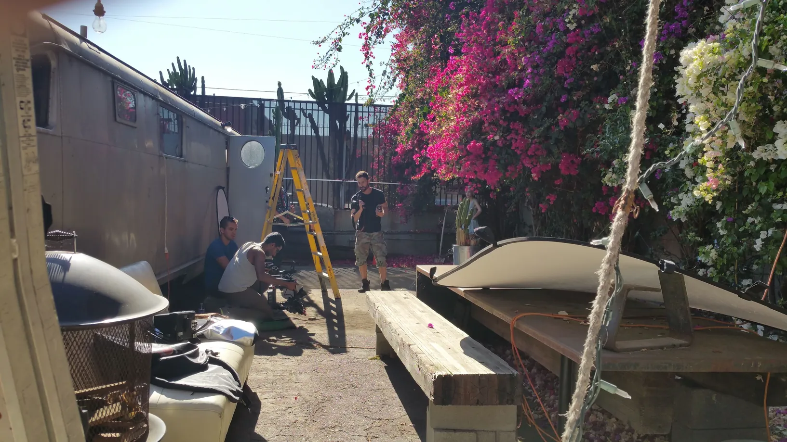
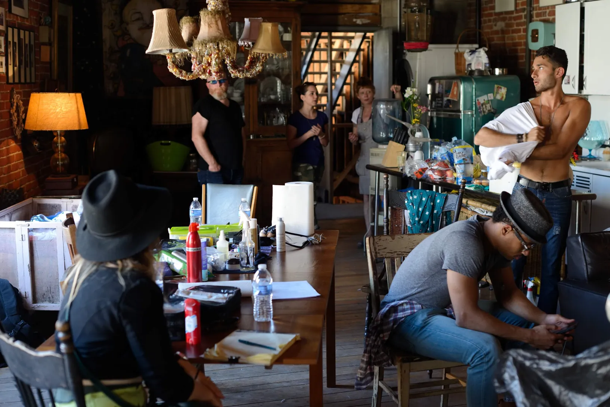
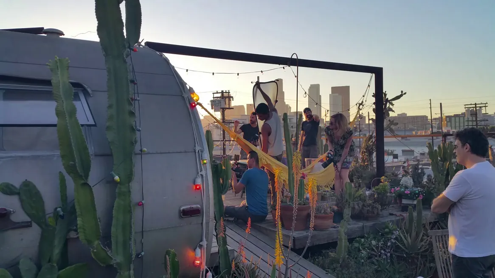
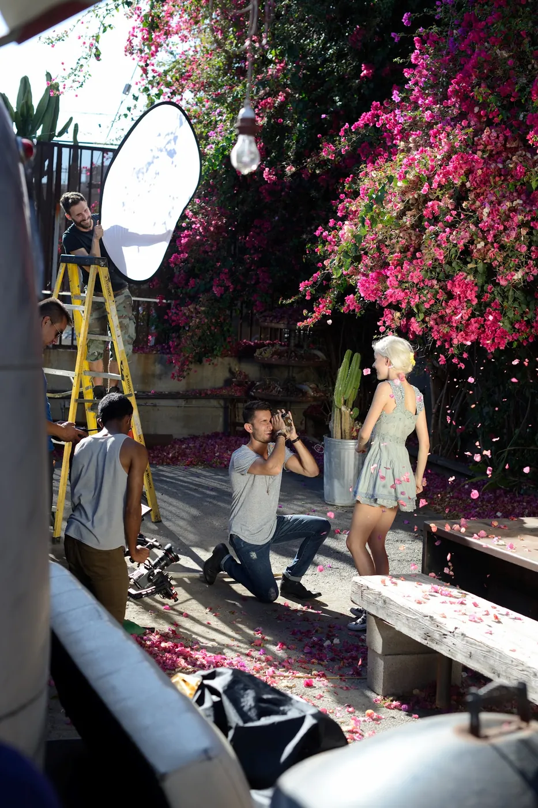
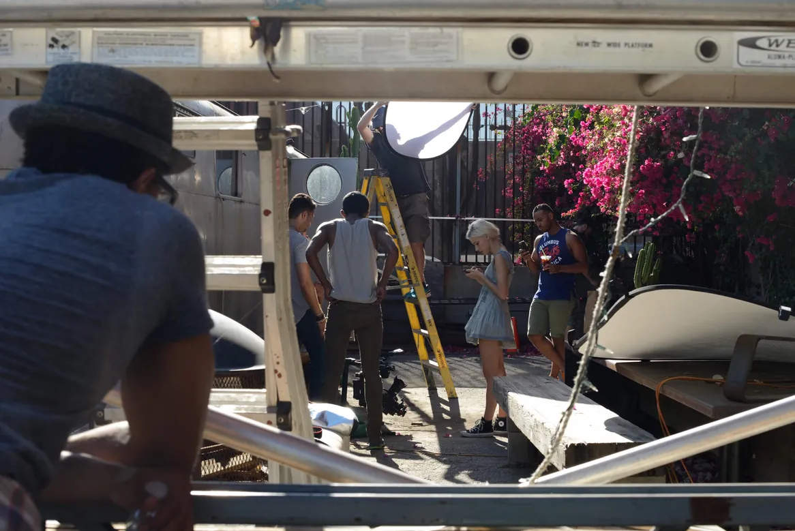
The fireflies in the jars are the effects work, along with the money shot at the end — the Airstream on the roof with Downtown behind it. Everything you see glowing in a mason jar was put there afterwards.
Les lucioles dans les bocaux sont le travail d'effets, avec le money shot de la fin — l'Airstream sur le toit, Downtown derrière. Tout ce qui brille dans un bocal a été mis là après coup.
Which leaves the one snag. When the shelf of jars came up, Mr. Pinoux asked for a clean plate — the same frame with nobody in it. There wasn't one: everything had been shot with the lights already on the shelf. “Fucked up that one,” came the reply. A photograph of the jars turned up instead, and it was made to work.
Ce qui laisse le seul accroc. Au moment de traiter l'étagère de bocaux, Mr. Pinoux a demandé une plaque propre — le même cadre sans personne dedans. Il n'y en avait pas : tout avait été tourné avec les lumières déjà sur l'étagère. « J'ai foiré ce coup-là », a répondu Cuseo. Une photo des bocaux est arrivée à la place, et il a fallu faire avec.
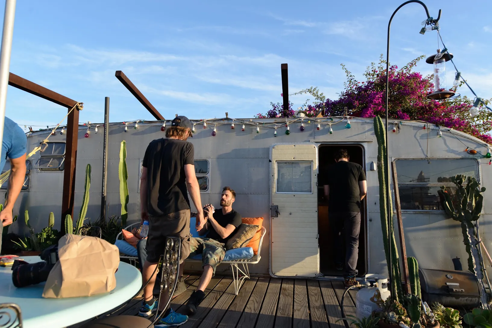
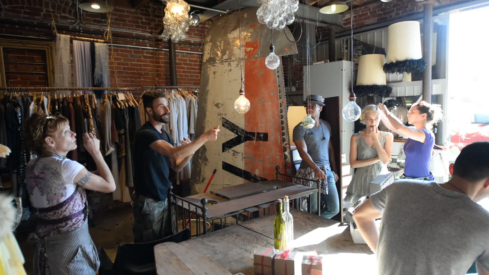
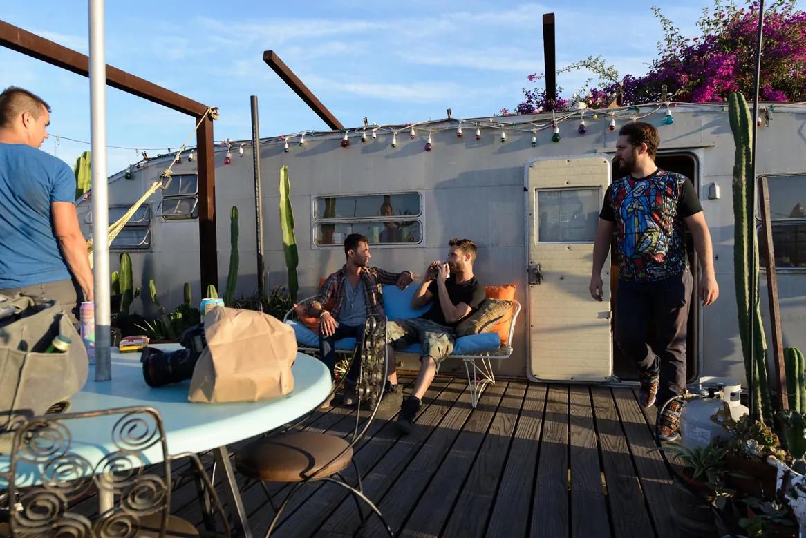
A good crew, a good mood, an artist who was easy to be around, and the young woman playing the love interest in the storyboard — lovely too. Some days the whole thing just runs.
Une bonne équipe, une bonne ambiance, un artiste très sympa, et la fille qui jouait l'amoureuse du storyboard — très sympa aussi. Il y a des jours où tout roule.
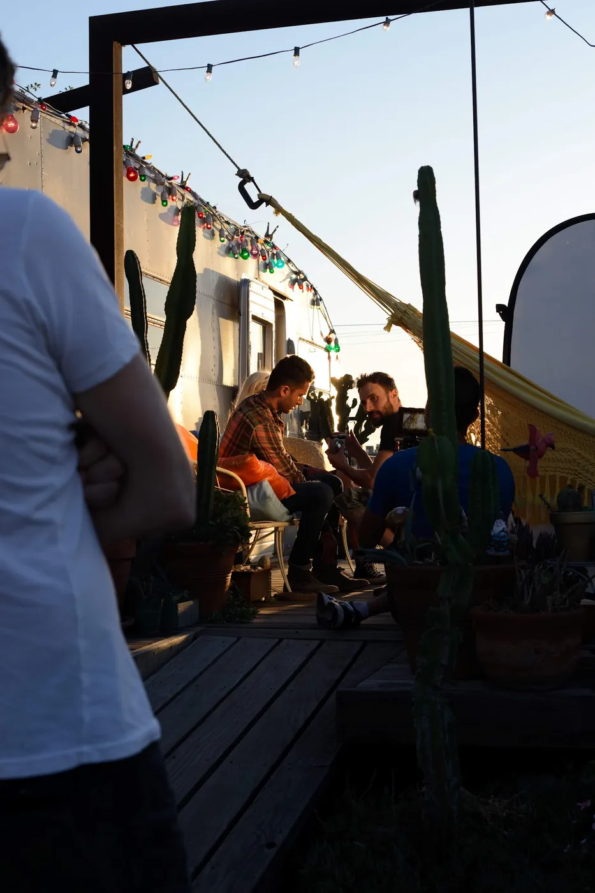
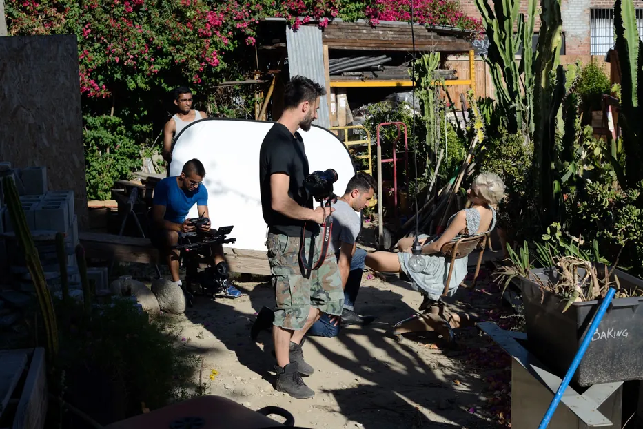
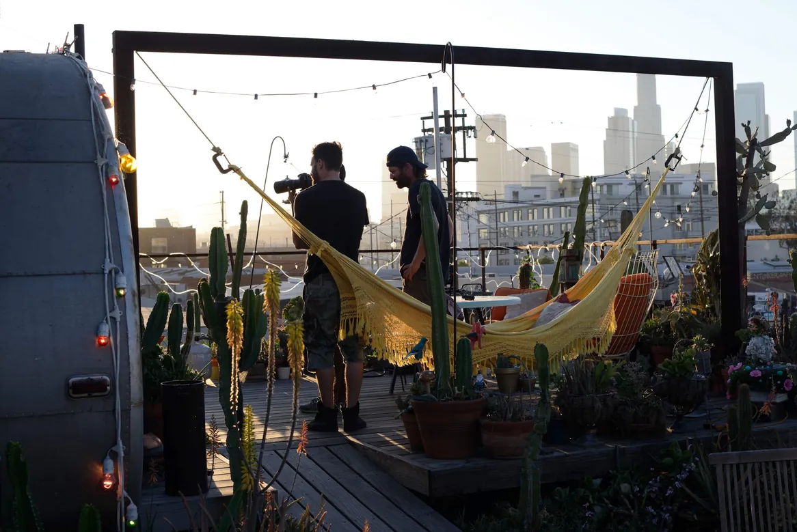
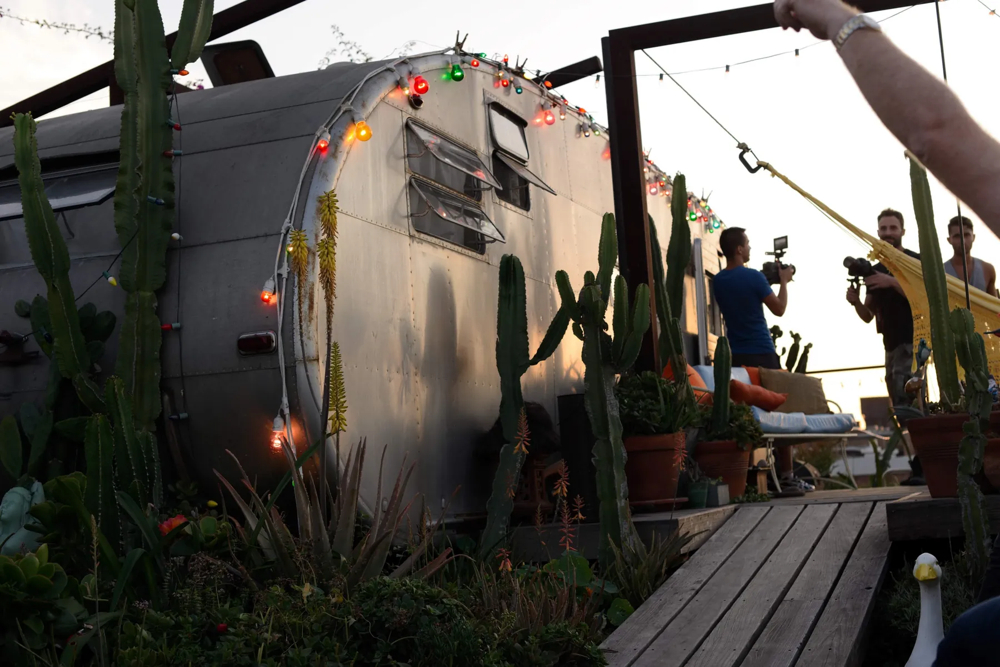